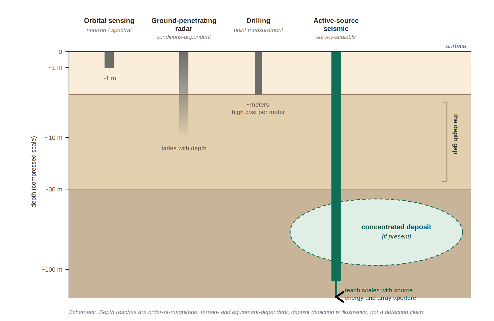

Reference Concept • Resource Assessment Capability
Subsurface Ice Deposit Assessment (SIDA)
A requirements-style definition of a deposit-scale subsurface assessment capability for lunar water ice — the class of measurement required before extraction-scale infrastructure investment can be justified.
What this page is
This page defines a neutral capability class for locating and characterizing concentrated subsurface ice bodies on the Moon at depths relevant to resource extraction. It is not a product announcement, not a mission design, and not a solicitation.
Core idea: industrial-scale lunar water demand can only be met economically from concentrated deposits — and if such deposits exist, they lie below the reach of every currently flown prospecting method except one.
The deposit question
Lunar water demand at station and depot scale — propellant, radiation shielding, life support, thermal mass — is measured in thousands of tons. At the low dispersed concentrations reported near the surface (single-digit percent by weight or below), meeting that demand means excavating and processing regolith at a scale of hundreds of thousands of tons — a mining operation whose economics are unlikely to close.
What changes the economics is a concentrated deposit: a relic ice body, an ice-cemented horizon tens of meters thick, or an equivalent high-grade zone where extraction resembles producing from a well rather than strip-mining a dilute surface layer.
Whether such deposits exist, where they are, and how large they are is therefore the load-bearing question of lunar water economics. It cannot be answered by surface measurements.
The depth gap

Currently flown and near-term prospecting methods saturate shallow:
| Method class | Effective depth | Limitation |
|---|---|---|
| Orbital neutron / spectral sensing | ~1 m | Senses hydrogen in the uppermost regolith only; no depth profile |
| Ground-penetrating radar | Meters to tens of m (conditions-dependent) | Dielectric-contrast dependent; attenuation limits depth and interpretation |
| Drilling / excavation | ~Meters | Point measurement; depth gained only at large engineering cost per meter |
| Active-source seismic | Tens to hundreds of meters, scalable | Depth scales with source energy and array aperture — an equipment decision, not a physics wall |
Seismic methods are how essentially every deep resource on Earth is located before capital is committed to extraction. They are the only geophysical method class whose depth of investigation scales with the survey, rather than saturating at a physical limit.
Lunar-surface feasibility is not speculative: the Apollo Active Seismic Experiments (Apollo 14, 16) operated small mobile sources on the regolith, and the Apollo 17 Lunar Seismic Profiling Experiment scaled the source class and imaged structure at hundreds-of-meters scale. The progression from small prospecting sources to deposit-scale surveys was demonstrated on the Moon five decades ago.
Scope of application
SIDA-class assessment should precede:
- Extraction-plant siting and ISRU capital commitment
- Water-dependent architecture decisions (depot placement, station logistics)
- Long-term surface infrastructure planning in ice-prospective terrain
- Resource valuation, reserve estimation, and any commercial claims of deposit scale
SIDA-class assessment complements shallow compositional prospecting; it addresses deposit geometry and continuity at depth, not surface volatile inventory.
Measurement objectives
Primary objectives
- Detect and delineate subsurface velocity/mechanical contrasts consistent with ice-bearing bodies at depths beyond direct sampling
- Estimate depth, lateral extent, and continuity of candidate deposits
- Calibrate subsurface inference against direct measurement where co-located ground truth (drilling or excavation) is available
- Attach explicit uncertainty to every inferred quantity
Recommended (mission-dependent)
- Discriminate ice-cemented material from mechanically similar dry lithologies via complementary observables
- Rank candidate sites by inferred grade, volume, and accessibility
- Repeat surveys to extend coverage and refine deposit models over multiple missions
Success criterion: outputs support a go/no-go extraction-investment decision with quantified confidence — not qualitative “ice may be present” statements.
Functional requirements (requirements-style)
| ID | Function | Requirement |
|---|---|---|
| SIDA-F-001 | Depth of investigation | The capability shall characterize the subsurface to depths meaningfully beyond direct
sampling reach, at minimum the tens-of-meters class relevant to deposit-scale bodies.
Beyond drill reachScalable |
| SIDA-F-002 | Deposit geometry | The capability shall constrain the depth, thickness, and lateral extent of candidate
ice-bearing zones, not merely their presence.
DelineationVolume estimation |
| SIDA-F-003 | Ground-truth calibration | Where direct subsurface measurements are available within the survey footprint,
inferred properties shall be calibrated against them, and the calibration shall be
carried into all extrapolated claims.
Tie to direct measurementTraceability |
| SIDA-F-004 | Uncertainty quantification | All inferred deposit properties shall carry explicit uncertainty bounds suitable for
investment-grade decision making.
Confidence intervalsDecision-ready |
| SIDA-F-005 | Survey repeatability | Measurements shall be positioned and documented such that surveys can be extended,
densified, or repeated across missions with cross-comparable results.
Cumulative coverageStandardized products |
Note: quantitative thresholds (depths, resolutions, confidence levels) are site- and architecture-dependent and should be set by the extraction-economics requirements of the intended use.
Graduated capability tiers
A distinguishing property of this capability class is that it scales. A credible development path proceeds in tiers, each retiring risk for the next:
- Prospecting-class — compact mobile source and small sensor array; method validation and shallow-deposit reconnaissance (tens of meters); calibrated against co-located direct sampling.
- Delineation-class — larger sources, longer arrays, denser coverage; mapping the geometry of identified candidate zones (tens to ~hundred meters).
- Resource-proving class — survey campaigns sized to support reserve estimation and extraction-plant siting; the lunar analog of a bankable feasibility study. The terrestrial exploration industry is the existence proof: the equipment ladder from portable sources to vibroseis-class survey systems is continuous, so the lunar version is an engineering transfer, not an invention.
Each tier reuses the methods, data products, and calibration discipline of the tier before it. The Apollo experiments demonstrated the physics of the first two tiers on the lunar surface.
Data products
Minimum
- Subsurface structural/velocity model per surveyed site, with uncertainty
- Candidate deposit inventory: location, depth, extent, inferred grade class, confidence
- Calibration record tying inference to any co-located direct measurements
- Survey metadata sufficient for independent reprocessing
Optional / mission-dependent
- Site ranking against extraction-difficulty criteria
- Depth-of-confidence mapping (directly sampled vs. inferred)
- Cross-mission cumulative deposit maps
Usability requirement: outputs should be legible to resource economists and mission architects, not only geophysicists.
Ballpark cost (ROM)
Order-of-magnitude cost for flight-qualified SIDA-class capability (excluding mobility platform/lander bus and launch), planning-grade only:
- Prospecting-class instrument payload: low tens of $M
- Delineation-class survey campaign: several tens of $M, dominated by surface operations and coverage rather than instrument cost
These ranges are intended for early architecture budgeting and discussion, not vendor quotes. The economics comparison that matters: either figure is small against the cost of siting extraction infrastructure on an unproven resource.
Relationship to mission risk
Absence of SIDA-class assessment before extraction-scale commitment constitutes a known program risk: capital deployed against a resource whose existence, scale, and grade are unmeasured. The commercial history of terrestrial mining is unambiguous on this point — deposits are proven before plants are built.
Conversely, premature architecture conservatism (assuming only dilute surface resources exist) may forfeit the economics that make lunar water viable at all. SIDA-class measurement reduces epistemic uncertainty in both directions; it does not eliminate exploration risk and does not replace staged investment discipline.
A proven deep deposit also reshapes the extraction architecture itself: production from a concentrated body at depth favors well-based thermal extraction over surface mining — which is precisely why deposit-scale assessment, not shallow inventory, is the measurement that extraction economics turn on.
Standardization potential
Standardizing SIDA-class survey products across missions enables cumulative, cross-comparable subsurface knowledge — a growing deposit map rather than isolated soundings. Over time this constitutes the geological survey layer that any sustained lunar economy will require.